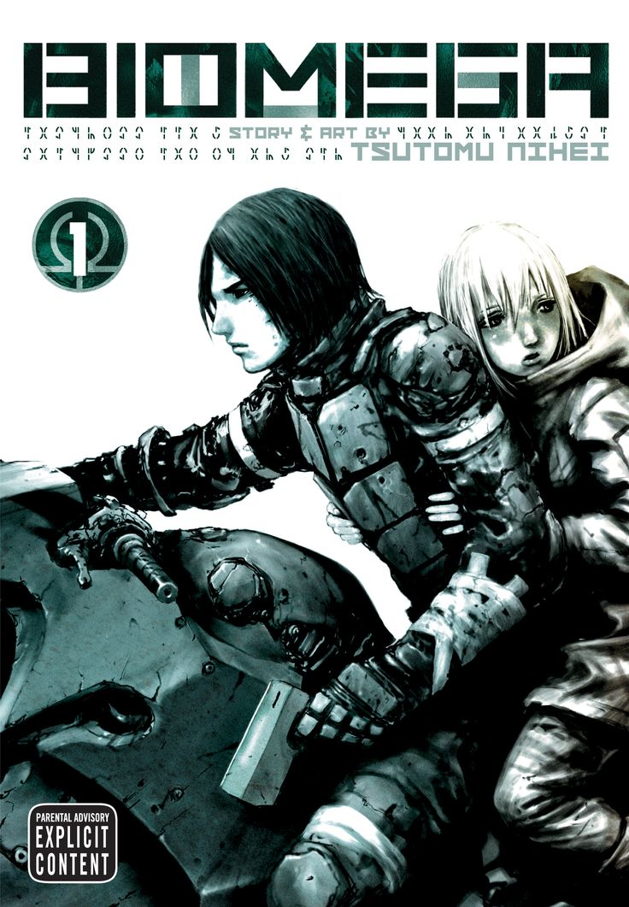
¿Biomega De Que Trata?
En un mundo postapocalíptico devastado por un virus llamado N5S, que convierte a los humanos en criaturas zombificadas llamadas “drones”, el protagonista Zoichi Kanoe, un agente modificado de la empresa Toha Heavy Industries, es enviado para buscar humanos inmunes. Armado con tecnología de punta y acompañado por una inteligencia artificial, se abre paso a través de ruinas futuristas llenas de horror y desesperación. Este manga es oscuro, visualmente impactante y con un estilo muy característico de Nihei.
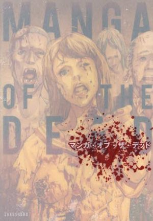
¿Manga of the Dead De Que Trata?
Cada episodio viene de mano de un mangaka distinto, lo que vuelve a esta publicación un conjunto muy variado. Por ejemplo, tenemos la historia “And I Loved Her”, de Katsuya Terada, donde una familia mantiene a su abuela zombie encadenada en el sótano, cuidando de su cuerpo putrefacto. Otra historia curiosa es “Shitai to Kurasu na Kodomotachi”, de Sachiko Uguisu, en la que dos pequeños niños se las rebuscan para sobrevivir en un mundo plagado por zombies… junto a sus padres ya transformados.
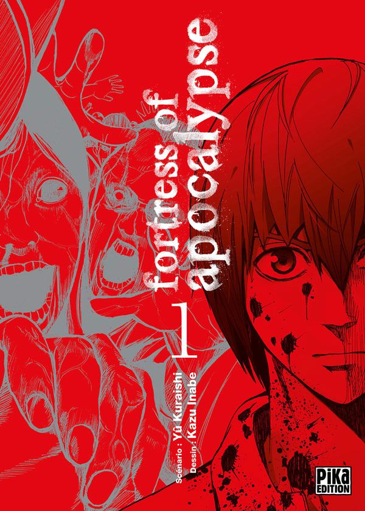
¿Apocalypse no Toride De Que Trata?
Un estudiante es acusado injustamente de asesinato y enviado a una correccional. Poco después, el apocalipsis zombie estalla afuera, y la prisión se convierte en su inesperado refugio… o su tumba. Con la ayuda de otros presos, lucha por sobrevivir, mientras el mundo se derrumba.
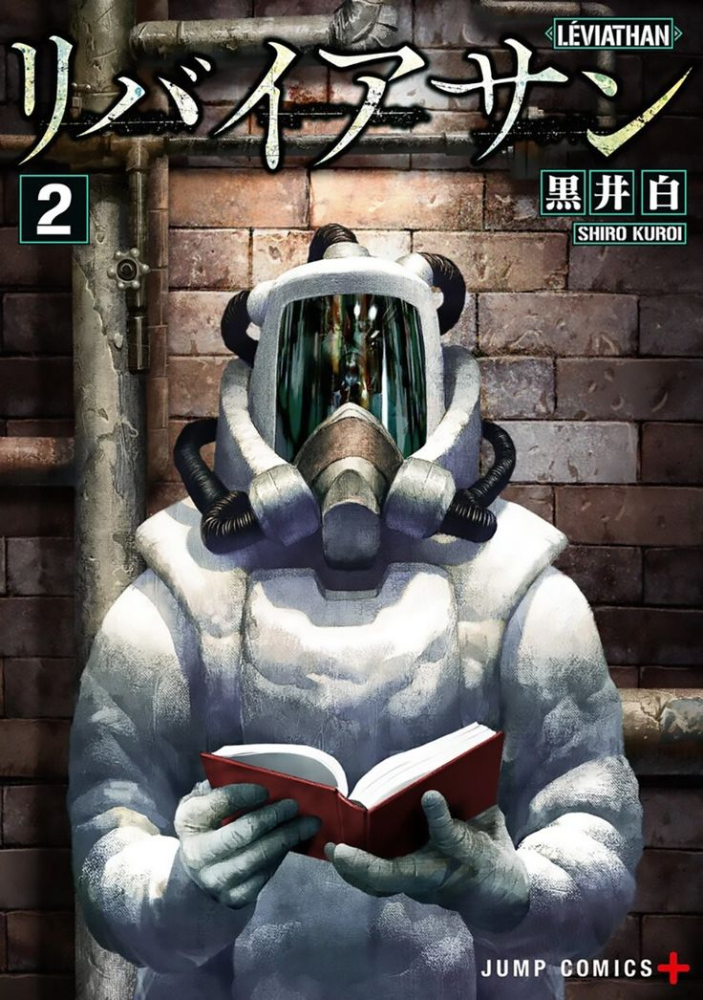
¿Leviathan De Que Trata?
En una estación espacial donde un grupo de jóvenes fue enviado para ser entrenado, las cosas se tornan extrañas cuando la tripulación adulta desaparece misteriosamente. Con el encierro, la presión psicológica y lo desconocido acechando, los chicos deben enfrentarse a sus miedos y a sí mismos.
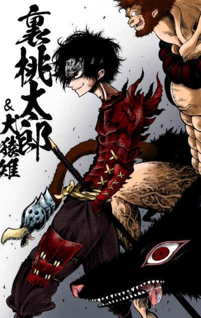
¿otogi bukkoroshiamu De Que Trata?
Se trata de una competencia violenta y sangrienta donde los personajes se enfrentan entre sí en duelos brutales, revelando motivaciones trágicas, transformaciones poderosas y giros oscuros. Son 32 participantes que luchan por sus sueños, venganza o redención —todo con un estilo visual brutal y escenas gore que desafían el sentido común
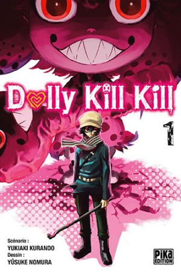
¿Dolly Kill Kill De Que Trata?
En este mundo existe un escuadrón llamado Trial & Error quienes se dedican a obtener la mayor información posible sobre el origen de las Dolly, y descubren que también existen personas que tienen la capacidad de dañar directamente a las muñecas.
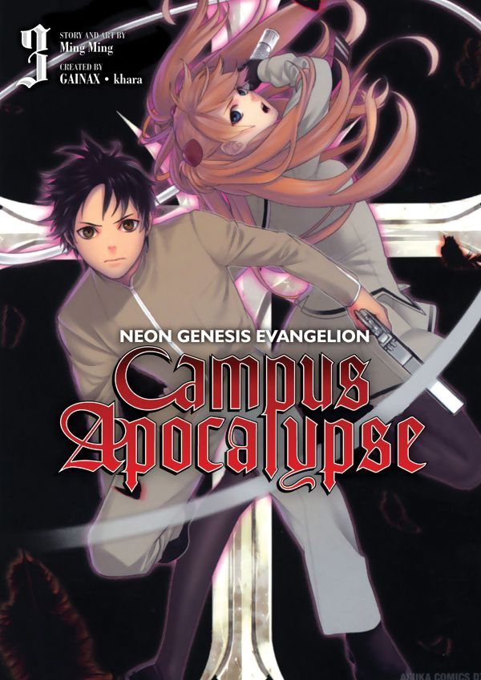
¿Neon Genesis Evangelion: Campus Apocalypse De Que Trata?
Una versión alterna de la historia original de Evangelion. Aquí, Shinji es un estudiante que se ve envuelto en una lucha sobrenatural contra entidades llamadas "ángeles", pero no hay mechas. En su lugar, los personajes empuñan armas especiales que simbolizan su alma. Una historia escolar con acción y romance, pensada como un spin-off ligero del universo original.
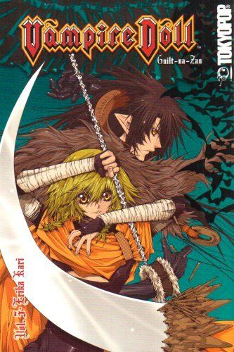
¿Vampire Doll: Guilt-na-Zan De Que Trata?
Guilt-na-Zan, un temido vampiro, es revivido siglos después… ¡dentro del cuerpo de una muñeca de porcelana femenina! Obligado a servir a un joven exorcista, se ve envuelto en situaciones absurdas y cómicas mientras intenta recuperar su forma original. Humor gótico con una pizca de acción sobrenatural.
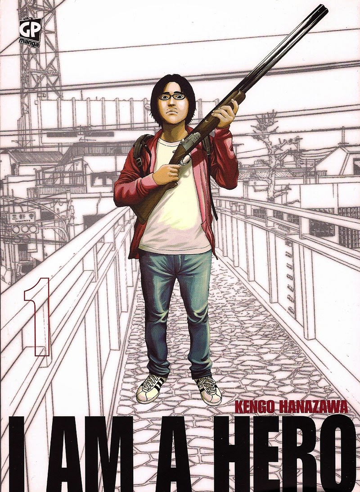
¿I Am a Hero De Que Trata?
Hideo Suzuki es un mangaka frustrado, con problemas mentales y sociales… hasta que el apocalipsis estalla. Un misterioso virus convierte a los humanos en criaturas llamadas "ZQN". La historia mezcla elementos de horror zombi con una fuerte carga psicológica, presentando a un protagonista inusual y realista en un Japón devastado. Es uno de los mangas de zombis más elogiados por su enfoque serio y su arte impresionante.
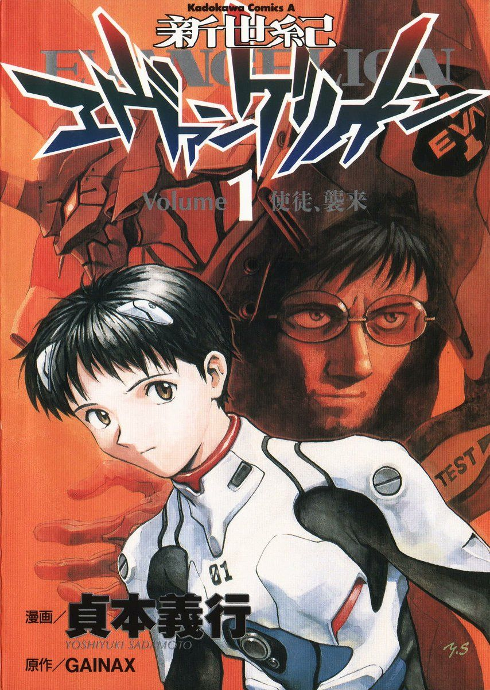
¿Neon Genesis Evangelion De Que Trata?
eGuts, apodado "ELa historia sigue a Shinji Ikari, un adolescente reclutado por la organización NERV para pilotar un robot gigante (Eva-01) y combatir criaturas conocidas como Ángeles. Sin embargo, lo que parece una historia de ciencia ficción y batallas, se convierte en una introspección profunda sobre la soledad, la depresión y el trauma emocional. El manga ofrece diferencias clave respecto al anime y un final alternativo.
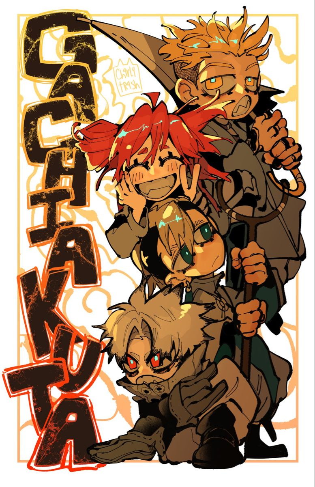
¿Gachiakuta De Que Trata?
En una sociedad estratificada con ciudades flotantes, los más pobres y condenados (como Rudo) son arrojados al abismo a un lugar llamado Pit, habitado por monstruos formados por basura y desechos. Rudo, falsamente acusado de asesinato, se ve obligado a sobrevivir ahí y se une a un grupo llamado “Cleaners” —exiliados que combaten las amenazas mutantes— mientras busca limpiar su nombre y redimirse
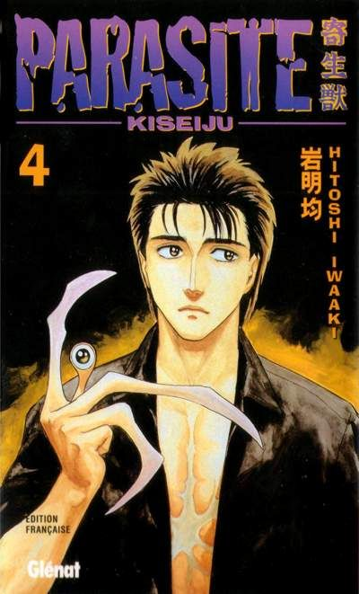
¿Parasyte De Que Trata?
Una raza de parásitos alienígenas invade la Tierra, tomando control de cuerpos humanos al ingresar por los oídos o nariz. Un estudiante llamado Shinichi es infectado, pero el parásito solo logra ocupar su mano derecha. Así comienza su lucha por sobrevivir y mantener su humanidad mientras otros parásitos buscan dominar o destruir. Famoso por su historia reflexiva y sangrienta, y adaptado exitosamente al anime.
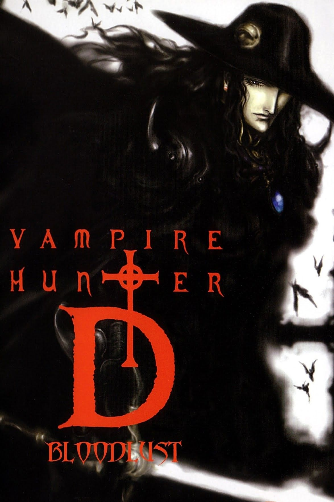
¿Vampire Hunter D: Bloodlust De Que Trata?
Basado en las novelas de Hideyuki Kikuchi, sigue a "D", un dhampir (mitad humano, mitad vampiro), cazador de vampiros en un mundo post-apocalíptico con una ambientación gótica y tecnología avanzada. Este volumen en particular se inspira en la película Bloodlust, una adaptación muy estilizada y aclamada.
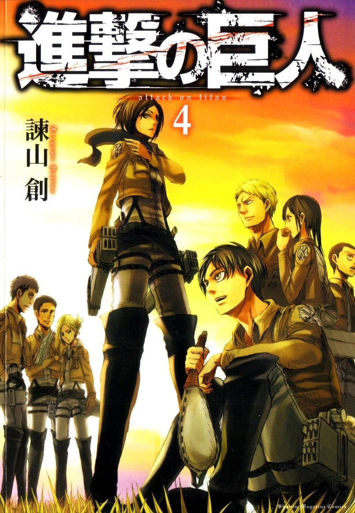
¿Shingeki no Kyojin De Que Trata?
En un mundo donde la humanidad está al borde de la extinción a causa de gigantes devoradores de humanos, los supervivientes se protegen dentro de murallas. La historia sigue a Eren Yeager y sus compañeros mientras luchan para descubrir la verdad tras los titanes.
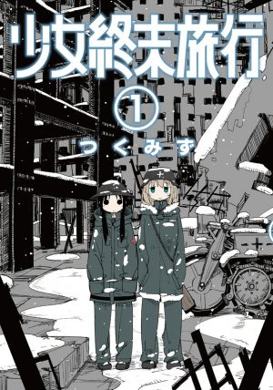
¿Shoujo Shuumatsu Ryokou De Que Trata?
as chicas viajan en su motocicleta sin un rumbo específico, y solo se dedican a hacer bromas entre sí, buscar refugio, comida y combustible, mientras van descubriendo maravillas en las ruinas de lo que alguna vez fue una civilización. Todo esto muy bien dibujado en un estilo Moe muy minimalista, que nos hará ponernos en la piel de estas chicas.
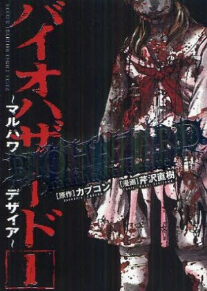
¿Resident Evil Marhawa Desire De Que Trata?
El profesor Doug ha colaborado anteriormente con la BSAA en otros brotes de los virus de la Corporación Umbrella, por lo cual es solicitado por la Madre Superiora de Marhawa. Debido al prestigio de la institución, todos intentan que el caso de la alumna infectada se lleve a cabo con la mayor discreción posible, pero pronto esto se saldrá de control y será necesario traer a los oficiales Chris Redfield y Piers Nivans para controlar la situación, la cual resulta aún más compleja de lo que se creía en un principio.
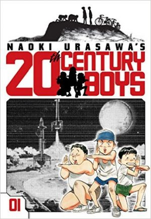
¿20th Century Boys De Que Trata?
Kenji Endo es un joven que atiende una pequeña tienda de conveniencia y pasa los días recordando su juventud, cuando tocaba en su banda. Cuando el ser misterioso que se hace llamar a sí mismo "Amigo" toma el control del mundo, será tarea de Kenji y sus compañeros terminar con el mundo distópico y autoritario que ha creado, por lo que toda oposición será catalogada como terrorismo.
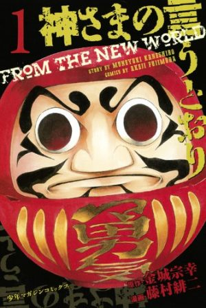
¿Kamisama no Iutoori De Que Trata?
Shun Takahata es un estudiante promedio de secundaria, y desde que puede recordar, su vida ha sido aburrida y sin sentido. Eso hasta que un dia, sin más, la cabeza de su profesor explota y deja al descubierto un Daruma, con el cual tendrán que jugar a atraparlos.
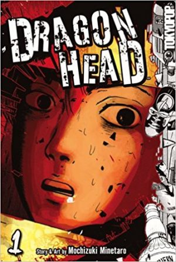
¿Dragon Head De Que Trata?
Teru es un joven estudiante que regresa de sus vacaciones de verano en el tren bala, pero éste se descarrila y queda volcado dentro de un túnel. En este escenario solo quedan tres supervivientes: Teru, Ako y Nobuo.
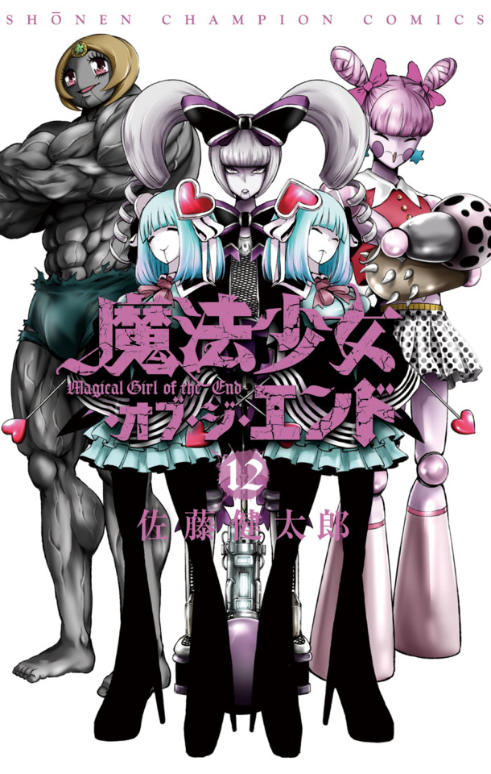
¿Mahou Shoujo of the End De Que Trata?
Kogami Kii es un estudiante promedio de secundaria, aburrido de su monótona vida escolar, que intenta pasar sus días desapercibido. Cierto día, durante un examen, observa una situación extraña en la entrada de la escuela, cuando uno de sus compañeros se encuentra discutiendo con una chica vestida de lo que podía parecer un cosplay; esta extraña chica de aspecto gótico pronto comienza a atacar a toda persona que tenga en frente.